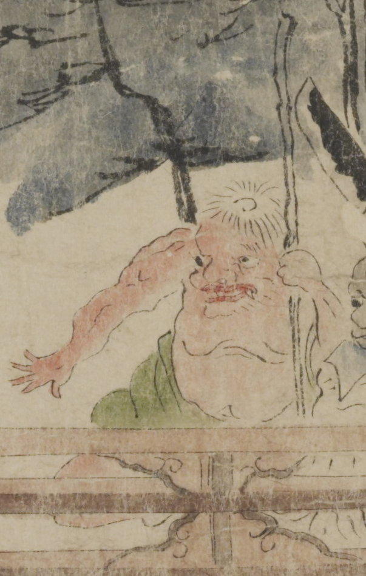

赤い肌の鬼。白髪を頭頂に生やし、大きな目玉は離れ気味である。唇は赤く、上顎から牙が覗いている。上半身を肌蹴て、緑色の着物を腰に絡げている。左手で杖を持ち、しゃがんでいる。
著作者：坂本弥一郎徳定／出典：親書誌：U426_nichibunken_0080：伊吹山酒呑童子絵巻；イブキヤマシュテンドウジエマキ／日付：2007／資源識別子：U426_nichibunken_0080_0002_0004
Copyright (c)2010- International Research Center for Japanese Studies, Kyoto, Japan. All rights reserved.